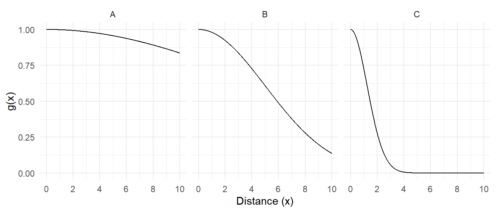
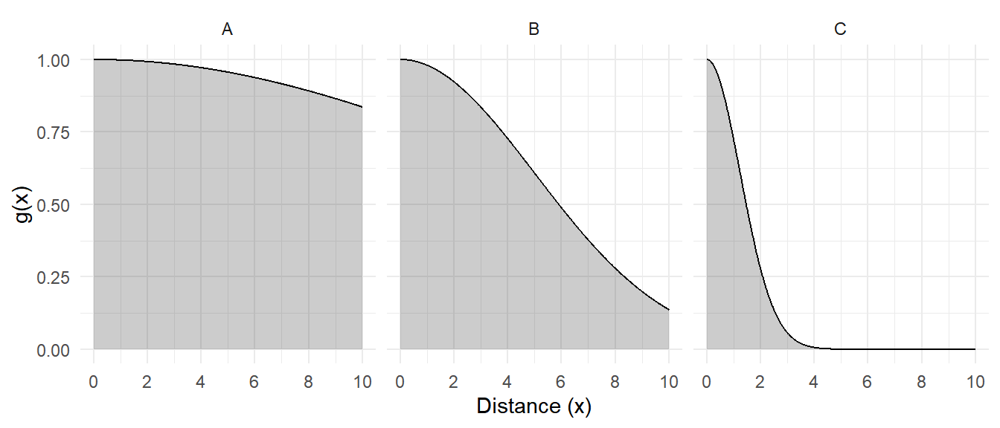
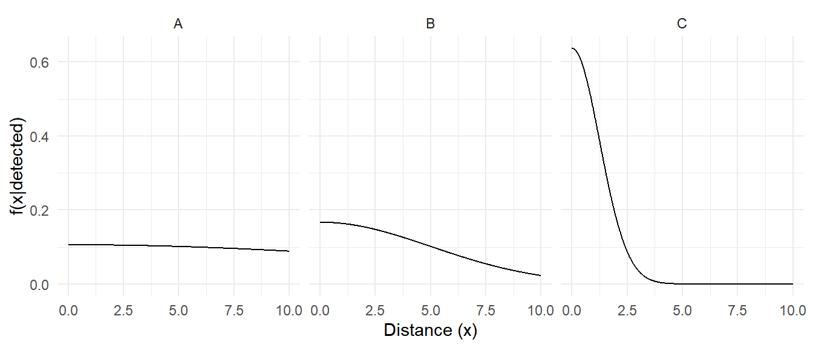
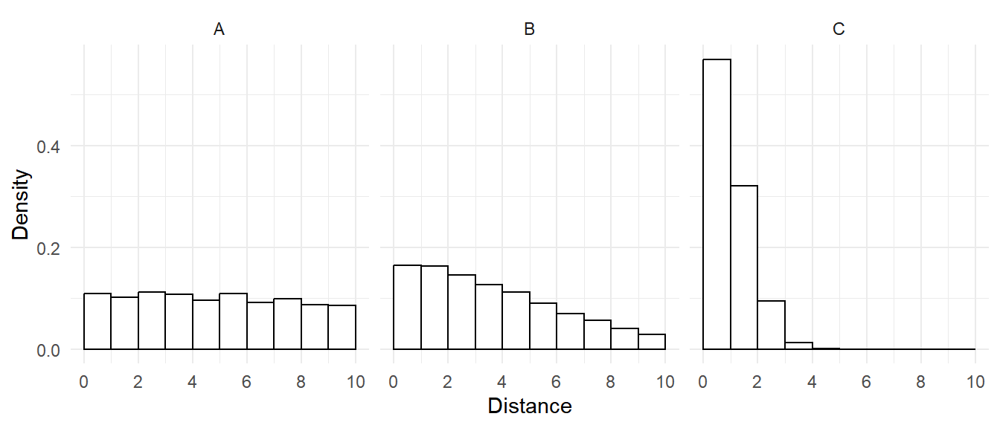
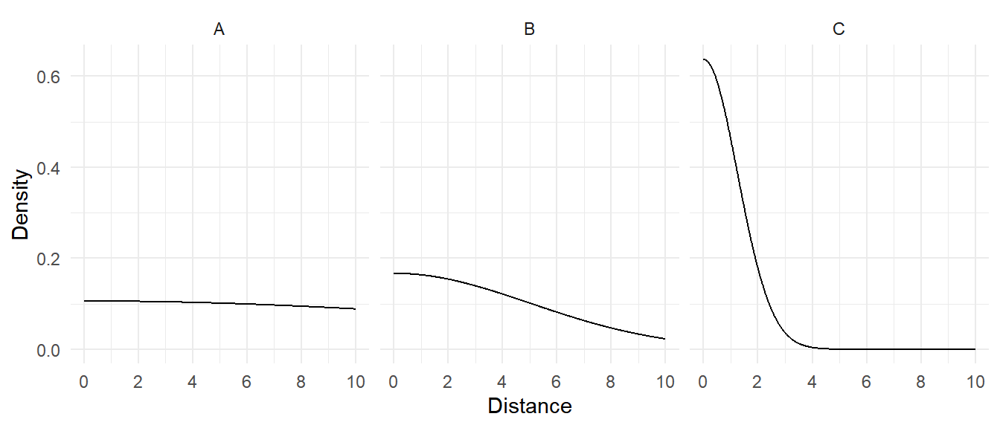

You can also download a PDF copy of this lecture.
Recall that we can estimate \(\tau\) as \[ \hat\tau = \sum_{i \in \mathcal{S}}\frac{y_i}{\pi_i}, \] where \(\pi_i\) is the probability of inclusion of the \(i\)-th element in the sample \(\mathcal{S}\). To be included the element must be (a) sampled and (b) the response variable of a sampled element must be observed. \[ \pi_i = P(\mbox{the $i$-th element is sampled})P(\mbox{the $i$-th element is observed } | \mbox{ the $i$-th element is sampled}). \] Failure to observe an element may be due to a variety of factors.
Detectability concerns the situation where sampled elements are, for some reason, never known to exist (i.e., “passed over”). This is how the issue is usually framed in the natural sciences.
Non-response concerns the situation where sampled elements fail or refuse to be observed. This is how the issue is usually framed in the social sciences where elements are people or social organizations (e.g., a business).
In this lecture we will from the problem of non-observation in terms of detectability, and discuss non-response specifically in a future lecture. But the results below apply to non-observation due to either non-detection or non-response.
It is useful to write the inclusion probability as \[ \pi_i = \underbrace{P(\mbox{the $i$-th element is sampled})}_{\pi_{i,S}}\underbrace{P(\mbox{the $i$-th element is observed } | \mbox{ the $i$-th element is sampled})}_{\pi_{i,D}}, \] so that \(\pi_i = \pi_{i,S}\pi_{i,D}\). The probability an element is sampled comes from the sampling design, but the probability that a sampled element is detected is determined by other factors.
Recall that the Horvitz-Thompson estimator of \(\tau\) can be written as \[ \hat\tau = \sum_{i \in \mathcal{S}} \frac{y_i}{\pi_i}. \] Now considering that inclusion requires (a) sampling and (b) observations, we have that \[ \hat\tau = \sum_{i \in \mathcal{S}} \frac{y_i}{\pi_{i,S}\pi_{i,D}}, \] since \(\pi_i = \pi_{i,S}\pi_{i,D}\), and \(\mathcal{S}\) is the set of elements that are both sampled and detected. In principle we can account for unobserved elements if we know the probability (\(\pi_{i,D}\)) that each element in the sample would be observed.
If \(\pi_{i,D}\) is a constant (i.e., the same for all elements), which we will call \(\pi_D\), then the Horvitz-Thompson estimator becomes \[ \hat\tau = \frac{1}{\pi_D}\sum_{i \in \mathcal{S}} \frac{y_i}{\pi_{i,S}}. \] This makes it clear that if ignore the problem of undetected or non-responding elements, implicitly assuming that \(\pi_D\) = 1, then we will tend to underestimate \(\tau\) because \[ \frac{1}{\pi_D}\sum_{i \in \mathcal{S}} \frac{y_i}{\pi_{i,S}} \ge \sum_{i \in \mathcal{S}} \frac{y_i}{\pi_{i,S}}. \] That is, unless \(\pi_D\) = 1 the estimator would be biased because \(E(\hat\tau) < \tau\).
This also makes it clear that if we know \(\pi_D\) (or can estimate it), then we can correct for undetected/non-response by simply multiplying an estimator of \(\tau\) by \(1/\pi_D\).
Example: A one-stage cluster sampling design estimates that the number of larkspur in a region is \(\hat\tau\) = 1000 plants. However we also know that some larkspur will likely go undetected, and that the probability of detection is 0.8. What is our estimate \(\tau\) if we account for detectability?
The situation for estimating \(\mu\) is a bit different when \(\pi_{i,D}\) is a constant. Consider the Hájek estimator of \(\mu\) which can be written as \[ \hat\mu = \frac{\sum_{i \in \mathcal{S}} y_i/\pi_i}{\sum_{i \in \mathcal{S}} 1/\pi_i}. \] If \(\pi_D\) is a constant so that \(\pi_i = \pi_{i,S}\pi_D\), then we can write this estimator as \[ \hat\mu = \frac{\sum_{i \in \mathcal{S}} y_i/\pi_{i,S}}{\sum_{i \in \mathcal{S}} 1/\pi_{i,S}}. \] Note that \(\pi_D\) does not appear in the estimator (because it cancels-out), and so we do not need to know/estimate \(\pi_D\), and we do not introduce bias into our estimator by failing to account for it. But this is only true if the probability of detection/response is constant (i.e., the same for all elements). Also note that there is still a negative impact of undetected or non-responding elements on estimation — it reduces the number of elements in the sample and so tends to increase the variance of an estimator and thus the bound on the error of estimation.
Things get more complicated when the probability of detection/response is not constant. In that case we can still, in principle, use Horvitz-Thompson or Hájek estimators like \[ \hat\tau = \sum_{i \in \mathcal{S}} \frac{y_i}{\pi_i} \ \ \ \text{and} \ \ \ \hat\mu = \frac{\sum_{i \in \mathcal{S}} y_i/\pi_i}{\sum_{i \in \mathcal{S}} 1/\pi_i}, \] where \(\pi_i = \pi_{i,S}\pi_{i,D}\), but now we would need to know (or be able to estimate) the detection/response probability of every element in the sample.
Consider the problem of abundance estimation using one-stage cluster sampling. Let \(y_i\) be the number of elements in the \(i\)-th cluster, and let \(x_i\) be the number of detected elements in the \(i\)-th cluster. Then detectability is \(\pi_D = \tau_x/\tau_y\). How do we estimate this?
Double-sampling. Consider a one-stage cluster sampling design with the ratio estimator \[ \hat\tau_y = \tau_x\bar{y}/\bar{x}. \] Here \(\tau_y\) is the number of elements in the population, and \(\tau_x\) is the number of detected elements in the population. Since usually \(\tau_x\) would be unknown, it could be estimated using double-sampling such that \(\hat\tau_x = N\bar{x}'\), where \(N\) is the number of clusters in the population, and \(\bar{x}'\) is the mean number of detected elements in a first-phase sample of clusters. Note that \(\bar{y}\) and \(\bar{x}\) are the mean number of elements and detected elements, respectively based on the second-phase sample of clusters.Then we can write the ratio estimator of \(\tau_y\) as \[ \hat\tau_y = N\bar{x}'\bar{y}/\bar{x} = N\bar{x}'/\hat\pi_D. \] Note that this estimator implicitly uses the ratio \(\bar{x}/\bar{y}\) to estimate \(\pi_D\) (see the first method above) and adjust the biased estimator \(N\bar{x}'\).
Example: Suppose that the sample described in the previous problem was the second-phase sample from a double-sampling design. Suppose the first-phase sample of 40 plots yielded a mean number of detected elements of 45, and assume the population consists of 100 plots. What is the detectability-adjusted estimate of the total number of plants in the population?
Mark-recapture. Let \(y_i\) denote the number of marked units in the \(i\)-th cluster, and let \(x_i\) denote the number of detected marked units in the \(i\)-th cluster. Assuming that the detectability of marked units is the same as unmarked units, we can use \(\bar{x}/\bar{y}\) to estimate detectability.
Example: Suppose the researchers already know of some plants in the region of interest from a previous survey. In a sample of plots selected using simple random sampling, the mean number of known plants per plot was 30, and the mean number of the known plants that were detected was 24. What is the estimate of the detectability of the plants?
Consider a one-stage cluster sampling design to estimate abundance. Then \(y_i = m_i\), and \(\hat\tau\) is an estimator of the number of elements in the population (i.e., abundance estimation). Assume constant detectability \(\pi_D\).
If each of the \(m_i\) elements in a cluster has a probability of \(\pi_D\) of being observed, then \(y_i\) has a binomial distribution (assuming observations are independent). It can be shown that \[ V(\hat\tau) = N^2\left[\left(1-\frac{n}{N}\right)\frac{\sigma^2}{n} + \left(\frac{1-\pi_D}{\pi_D}\right)\frac{\mu}{n}\right], \] where \(\mu = M/N\) is the mean number of elements per cluster. Note that the term \((1-\pi_D)/\pi_D\) increases as \(\pi_D\) decreases, so what happens to the variance of \(\hat\tau\) as detectability gets worse (i.e., lower)? And what happens if detectability is perfect (i.e., \(\pi_D\) = 1)?
In practice we often need to estimate detectability somehow. In these cases we often have that \[ V(\hat\tau) \approx N^2\left[\left(1-\frac{n}{N}\right)\frac{\sigma^2}{n} + \left(\frac{1-\pi_D}{\pi_D}\right)\frac{\mu}{n} + \frac{\mu^2}{\pi_D}V(\hat\pi_D)\right]. \] So what effect does the variance of our estimate of detectability have on the variance of our estimator for \(\tau\)?
In many cases detectability may be a function of some other variable. The method of distance sampling assumes that detectability is a function of distance from the observer to the element. The explanation of how distance sampling works involves some probability theory and is fairly technical. Some of the details are given here for those that might be interested. But the implementation of distance sampling is relatively straight forward.
Assume a random line transect and that detectability follows a detection function that depends on the distance to the center of the transect.

Assume perfect detection at a distance of \(x\) = 0 so that \(g(0)\) = 1.The expected detectability of a randomly sampled element is \[ \int_0^w\!\! \frac{g(x)}{w} dx = \frac{1}{w}\int_0^w\!\! g(x)dx, \] i.e., the expected value of \(g(x)\). The probability density of \(x\) is \(u(x) = 1/w\) between 0 and \(w\). Here \(w\) is the half-width of the transect (i.e., the distance from the center to the edge). So \[\int_0^w g(x)dx\] is the area under the curve and between 0 and \(w\).

This allows us to determine the distribution of distances to detected elements (see proof below).
Thus the detectability of an element can be computed as \[ \pi_D = \frac{1}{wf(0|\text{detected})}, \] where \(f(0|\text{detected})\) is the probability density of the distances of detected elements at a distance of zero (see proof below).Informal proof: The distribution of distances of detected elements is \[ f(x|\text{detected}) = \frac{P(\text{detected}|x)u(x)}{P(\text{detected})}, \] where \(u(x)\) is the distribution of distances (detected or not). Now \(P(\text{detected}|x) = g(x)\), and \(P(\text{detected})\) is the detectability, \[ P(\text{detected}) = \frac{1}{w}\int_0^w\!\! g(x) dx, \] and because transects are located randomly, \(u(x) = 1/w\). Thus, \[ f(x|\text{detected}) = \frac{g(x)/w}{\frac{1}{w}\int_0^w\!\! g(x) dx} = \frac{g(x)}{wP(\text{detected})}. \] But since \(g(0) = 1\), if evaluate this function at \(x = 0\) we have \[ f(0|\text{detected}) = \frac{1}{wP(\text{detected})} \] which implies that \[ P(\text{detected}) = \frac{1}{wf(0|\text{detected})}. \]
In practice, we need to estimate the distribution of the detected elements. There are two general approaches.
Example: The figures blow show non-parametric and parametric estimates of the distribution of distances of detected elements for the three surveys using a half-width of \(w\) = 10.


| Case | Histogram | Parametric |
|---|---|---|
| A | 0.1096 | 0.1060 |
| B | 0.1644 | 0.1668 |
| C | 0.5691 | 0.6366 |
| Case | Histogram | Parametric |
|---|---|---|
| A | 0.9124 | 0.9434 |
| B | 0.6084 | 0.5994 |
| C | 0.1757 | 0.1571 |